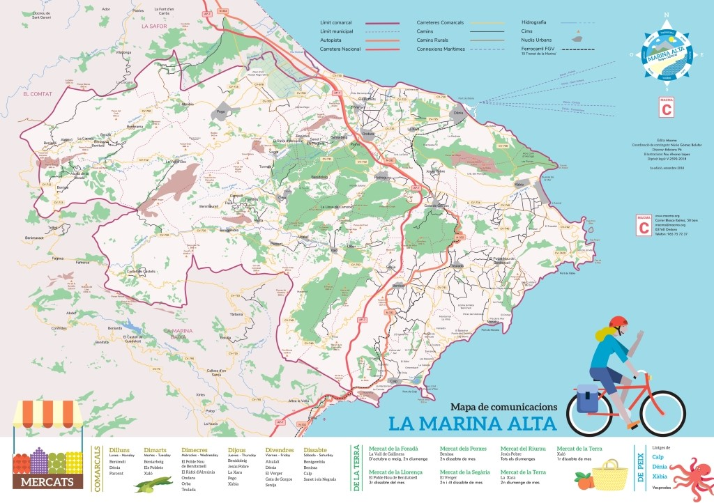
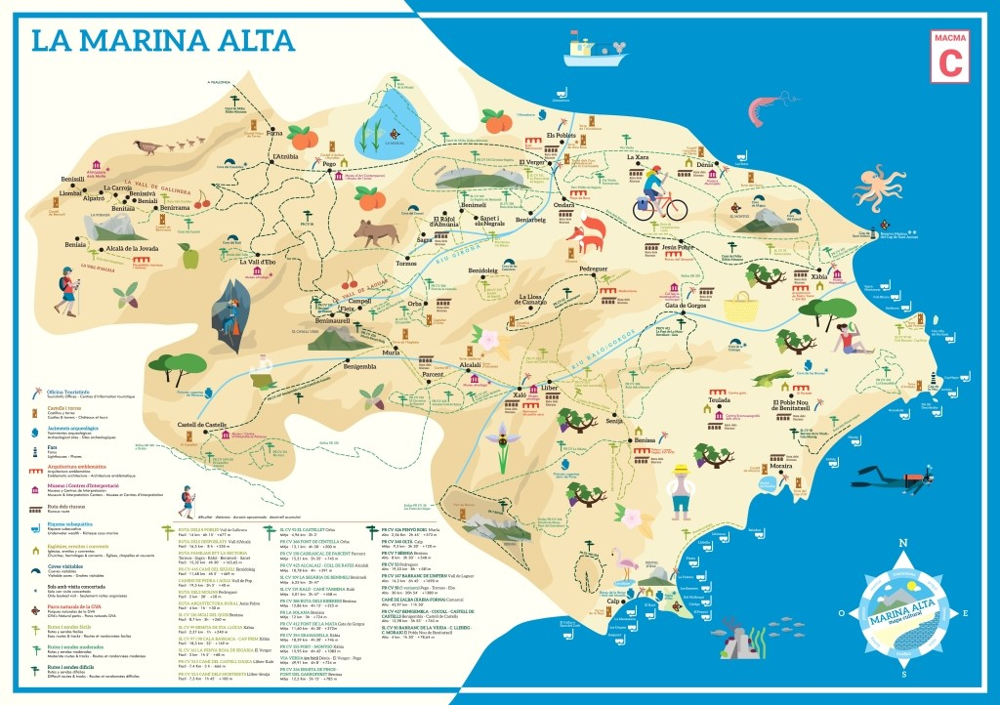

The orography of the region
La Marina Alta is a coastal region located north of the province of Alicante and south of Valencia. Its oreography forms a landscape full of contrasts that combines the coast with coasts with mountains and valleys. On its shores are numerous cliffs, coves and capes. Some of the most emblematic coastal accidents in the province are the Cabo San Antonio, Cabo San Martín, Cabo de la Nao. And the famous Peñón de Ifach in the town of Calpe. There are also important mountain ranges, such as the Sierra de Bernia or the imposing Monte Montgó. A wetland, Marjal Pego-Oliva, is also worth mentioning. Within the area there are also valleys of the interior of Pego, as well as the rivers Bullent, Racons, Girona and Gorgos.
 